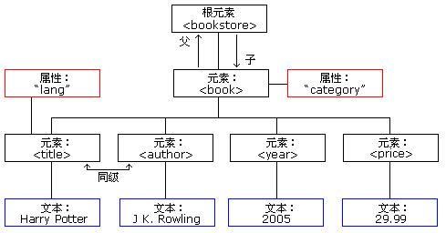

XML：可扩展标记语言（eXtensible Markup Language）
XML 实例
1 | <!-- 声明：版本和编码 --> |
XML 实例关系图：
1 | <bookstore> |
XML 语法规则
XML 文档必须有根元素
XML 元素都必须有一个关闭标签
XML 标签对大小写敏感
XML
必须正确嵌套（例如：**<b><i>错</b></i>，<b><i>对</i></b>**）
XML 属性值必须加引号（例如：<note date="12/11/2007">）
XML 特殊字符（如下表）：
| md 字符 | 显示字符 |
|---|---|
| < | < |
| > | > |
| & | & |
| &apos | ' |
| " | " |
XML 中的注释：<!-- 注释格式 -->
XML 中空格会被保留（而 HTML 会把多个连续的空格字符裁减（合并）为一个）
XML 以 LF 存储换行（一般 Windows 的换行：回车符（CR）和换行符（LF））
XML 命名规则：
XML 元素必须遵循以下命名规则：
>名称可以含字母、数字以及其他的字符
>名称不能以数字或者标点符号开始
>名称不能以字符”xml”(或者 XML、Xml) 开始
>名称不能包含空格
>可使用任何名称，没有保留的字词。
System.Xml 示例
获得 XML 对象
1 | //获得xml文件对象， |
1 | //获取xml文件根元素+子元素列表 |
读
读取元素指定的属性值
1 | //遍历元素列表 |
增
举例增加指定元素和属性
删
举例删除指定元素
1 | //遍历元素列表 |
改
Q&A：
未声明的前缀
A：声明是用来区分元素（例如：<sldcolorswatch:Optical/>,里面的冒号前缀是作为声明，未声明前缀就是 sldcolorswatch）
数据读XML失败
解答：可能是本机系统.netFramework底层的XML解析器工作异常，导致所有的XML文件无法解析，比如标准件库无法打开，属性卡无法存储设置等。
修复方法：在开始菜单中找到运行，输入CMD，打开命令窗口，分两次输入下面的命令按回车：
regsvr32 msxml3.dll
regsvr32 msxml4.dll
成功后会有相应的提示的。建议再重启一下PC，检查系统更新。